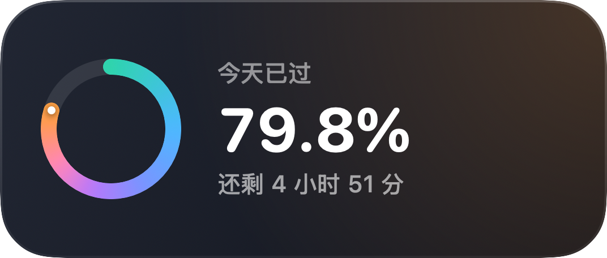
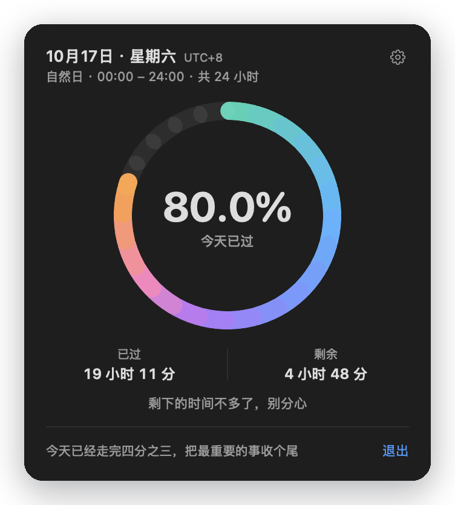
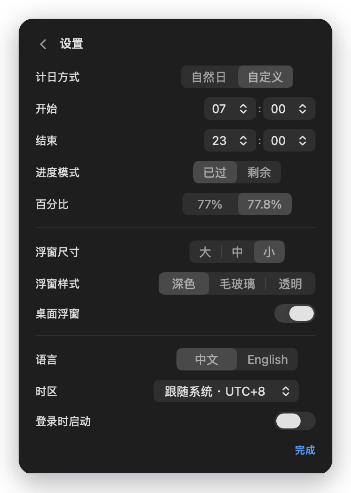
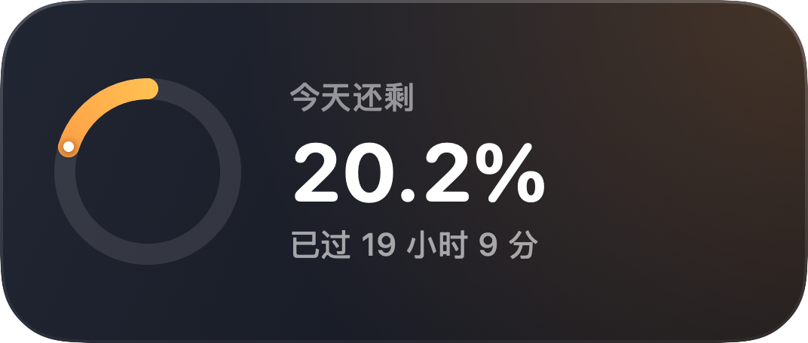
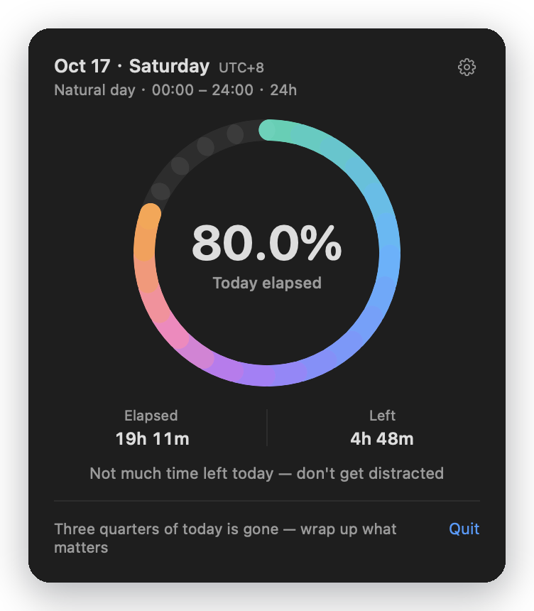

24 分钟，
是你一天的 1/60
DayProgress 是一个 macOS 菜单栏小工具：把“今天过去了多少 / 还剩多少”变成抬头就能看到的百分比。
通用二进制（Apple Silicon + Intel）· MIT License

为什么做这个
一天 1440 分钟，24 分钟只是 1.67%
在 X 上看到一句话：“24 分钟，就是你一天的 1/60。”
于是我用 DeepSeek-V4-Flash-1017 写了 DayProgress。它不会替我管理时间，只是让时间变得可见。
功能
抬头就能看到今天过去了多少
菜单栏常驻
沙漏图标 + 实时百分比，随时扫一眼就知道今天过了多少。
桌面浮窗
环形进度 + 大号百分比 + 剩余时间，置顶、可拖动、位置会记住。
已过 / 剩余
想看得更强一点？切成“还剩多少”，圆环也会跟着反向显示。
3 档尺寸 × 3 种外观
大 / 中 / 小，深色 / 毛玻璃 / 透明，放在桌面上刚刚好。
中 / 英文 + 20 个时区
界面一键切换，时区可选，出差不改“今天”的定义。
自定义一天
自然日，或者 07:00–23:00 这样只看清醒时间，跨夜也支持。
最近更新
1.2.1：小更新，把体验修顺了
没有新功能，修的是那些每天都会碰到的小地方。
首次启动引导
第一次打开会告诉你怎么用菜单栏、浮窗和退出，不用自己摸索。
结束的时候说清楚
时段走完显示「这个时段已结束」，并告诉你下一段几点开始。
百分比向下取整
99.9% 不会提前显示成 100%，等时钟真正走完才算。
安装说明补全
README 和这个页面都写了 Gatekeeper 放行、卸载和常见问题。
截图
真实界面




下载 DayProgress
v1.2.1 · macOS 13+ · 通用二进制 · 免费开源
安装步骤
-
下载并解压
从 GitHub Releases 下载最新的 zip，双击解压得到 App。
-
拖进「应用程序」
把 DayProgress.app 拖到 /Applications（或 ~/Applications）。
-
首次打开放行
被拦截时：系统设置 → 隐私与安全性 → 仍要打开。
-
在菜单栏使用
没有 Dock 图标；点右上角沙漏打开面板，退出在面板底部。
App 为 ad-hoc 签名、未公证，Gatekeeper 拦截属正常；macOS 15+ 右键 → 打开不一定有效，请用「仍要打开」。